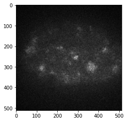
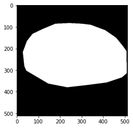
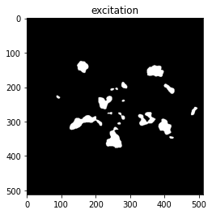
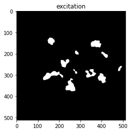
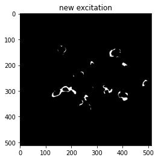
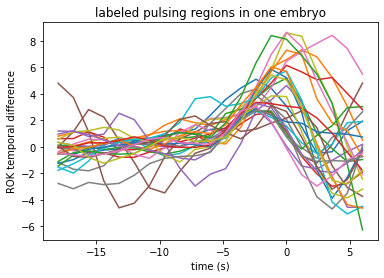
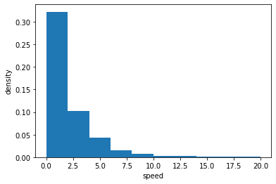
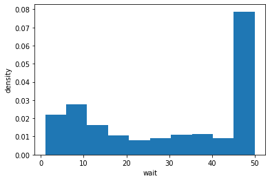
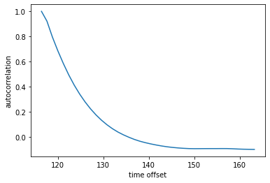

[1]:
import sys,os
sys.path.insert(0, os.path.abspath(os.path.join("../../src")))
Example jupyter notebook
Segment pulses of activity in videos
table of all embryos
[2]:
import numpy as np
import pandas as pd
from utils import dir_data,dir_out,pjoin
embryos = pd.read_csv(pjoin([dir_data,'embryos.csv']),skipinitialspace=True,comment='#').set_index('ID')
embryos
[2]:
| phenotype | LabelG | LabelR | tRes | nEnd | note | contractility | comment | |
|---|---|---|---|---|---|---|---|---|
| ID | ||||||||
| 20210409_7 | plst | ROK | NMY | 0.6 | 400 | SD3050 | NaN | EXAMPLE_6 |
| 20210410_2 | unc60 | ROK | NMY | 0.6 | 700 | SD3050 | NaN | weak |
| 20210410_6 | unc60 | ROK | NMY | 0.6 | 400 | SD3050 | NaN | weak |
| 20210410_7 | unc60 | ROK | NMY | 0.6 | 450 | SD3050 | NaN | NaN |
| 20210410_10 | unc60 | ROK | NMY | 0.6 | 300 | SD3050 | NaN | NaN |
| ... | ... | ... | ... | ... | ... | ... | ... | ... |
| 20191129_16 | ani+nmy | ROK | None | 0.6 | 590 | SD30 | NaN | NaN |
| 20191128_13 | nmy | UTR | None | 0.6 | 474 | SD30 | NaN | NaN |
| 20191128_14 | nmy | UTR | None | 0.6 | 581 | SD30 | NaN | NaN |
| 20191129_1 | ani+nmy | UTR | None | 0.6 | 559 | SD30 | NaN | NaN |
| 20191129_2 | ani+nmy | UTR | None | 0.6 | 589 | SD30 | NaN | NaN |
126 rows × 8 columns
[3]:
embryos.loc[embryos['phenotype']=='spd']
[3]:
| phenotype | LabelG | LabelR | tRes | nEnd | note | contractility | comment | |
|---|---|---|---|---|---|---|---|---|
| ID | ||||||||
| 20181116_3 | spd | ROK | NMY | 0.4 | 500 | TIRF2030 | NaN | NaN |
| 20181116_4 | spd | ROK | NMY | 0.4 | 650 | TIRF2030 | NaN | NaN |
| 20181116_5 | spd | ROK | NMY | 0.4 | 900 | TIRF2030 | NaN | NaN |
| 20181116_6 | spd | ROK | NMY | 0.4 | 350 | TIRF2030 | NaN | NaN |
| 20190317_5 | spd | ROK | LA | 0.4 | 600 | TIRF2025 | NaN | NaN |
| 20190317_7 | spd | ROK | LA | 0.4 | 650 | TIRF2025 | NaN | NaN |
| 20201118_18 | spd | ROK | LA | 0.4 | 500 | TIRF3030 | NaN | NaN |
| 20201118_19 | spd | ROK | LA | 0.4 | 350 | TIRF3030 | NaN | NaN |
| 20190524_3 | spd | ROK | LA | 0.6 | 550 | SD3050 | NaN | NaN |
| 20190524_4 | spd | ROK | LA | 0.6 | 300 | SD3050 | NaN | NaN |
| 20190524_5 | spd | ROK | LA | 0.6 | 350 | SD3050 | NaN | NaN |
| 20190524_6 | spd | ROK | LA | 0.6 | 250 | SD3050 | NaN | NaN |
| 20190524_7 | spd | ROK | LA | 0.6 | 220 | SD3050 | NaN | NaN |
| 20190524_8 | spd | ROK | LA | 0.6 | 350 | SD3050 | NaN | NaN |
| 20210420_1 | spd | ROK | NMY | 0.6 | 300 | SD3050 | NaN | NaN |
| 20210420_9 | spd | ROK | NMY | 0.6 | 250 | SD3050 | NaN | NaN |
| 20210420_10 | spd | ROK | NMY | 0.6 | 200 | SD3050 | NaN | NaN |
| 20210420_12 | spd | ROK | NMY | 0.6 | 300 | SD3050 | NaN | NaN |
| 20210420_25 | spd | ROK | NMY | 0.6 | 250 | SD3050 | NaN | hypercontractile |
| 20210420_26 | spd | ROK | NMY | 0.6 | 200 | SD3050 | NaN | NaN |
| 20210420_28 | spd | ROK | NMY | 0.6 | 250 | SD3050 | NaN | NaN |
| 20210420_29 | spd | ROK | NMY | 0.6 | 350 | SD3050 | NaN | EXAMPLE_11 |
| 20210420_30 | spd | ROK | NMY | 0.6 | 250 | SD3050 | NaN | NaN |
| 20181117_1 | spd | UTR | NMY | 0.4 | 450 | TIRF2030 | NaN | NaN |
read raw tiff image
[4]:
ID,phenotype = '20190524_5','spd'
from utils import directories
from measure.preprocess import read_raw
dir_raw = pjoin([dir_data,directories['rawtif'],phenotype,ID])
result_read_raw = read_raw([dir_out,'',ID],dir_raw,ID,embryos.loc[ID]['LabelR'],embryos.loc[ID]['tRes'],embryos.loc[ID]['nEnd'])#read raw 16-bit tif files
result_read_raw.keys()
[4]:
dict_keys(['savedir', 'img', 'imr'])
[5]:
img = result_read_raw['img']
img.shape
[5]:
(346, 512, 512)
[6]:
frame = 10
import matplotlib.pyplot as plt
plt.imshow(img[frame],cmap='gray')
[6]:
<matplotlib.image.AxesImage at 0x11cc08790>

pixels in the embryo
[7]:
tRes = embryos.loc[ID]['tRes']
from measure.preprocess import read_outline
outline = read_outline(pjoin([dir_data,directories['outline'],'poly-'+ID+'.tif']))#read binary mask of the outline of the embryo
plt.imshow(outline,cmap='gray')
[7]:
<matplotlib.image.AxesImage at 0x11cd116d0>

correct photobleach
[8]:
from measure.segmentation import bleach_correction,group_diff
_,_,bc = bleach_correction(img, outline, window_length=int(40//tRes)*2+1, videozmin=int(100//tRes))#subtract photobleach trend in time for all pixels in each frame
bc.shape,bc.dtype
[8]:
((346, 512, 512), dtype('uint16'))
grouped average in time
[9]:
result_grouped = group_diff(bc,outline,tRes)
for k,v in result_grouped.items():
info = [type(v)]
if isinstance(v, np.ndarray):
info += [v.shape,v.dtype]
elif hasattr(v, "__len__"):
info += [len(v)]
print(k,*info)
RAW <class 'numpy.ndarray'> (173, 512, 512) uint16
SMOOTH <class 'numpy.ndarray'> (173, 512, 512) float32
DIFF <class 'numpy.ndarray'> (173, 512, 512) float32
zgroups <class 'list'> 173
excitation = temporal derivative > threshold
[10]:
threshold = 1.3# threshold value
diff = result_grouped['DIFF']
EXC = diff>threshold
EXC[:,~outline] = False# remove excitation outside of embryo
plt.imshow(EXC[frame],cmap='gray')
ax = plt.gca()
ax.set(title='excitation')
[10]:
[Text(0.5, 1.0, 'excitation')]

[11]:
# remove excitation regions smaller than 100 pixels at each frame
nonzeroz = lambda stk:np.where(stk.max(1).max(1))[0]
nzzs = nonzeroz(EXC)
from skimage.morphology import remove_small_objects
for z in nzzs:
EXC[z] = remove_small_objects(EXC[z], min_size=10**2)
plt.imshow(EXC[frame],cmap='gray')
ax = plt.gca()
ax.set(title='excitation')
[11]:
[Text(0.5, 1.0, 'excitation')]

[12]:
NEWEXC = np.zeros(EXC.shape,bool)
NEWEXC[nzzs[1:]] = np.diff(EXC[nzzs].astype(int),axis=0)>0
plt.imshow(NEWEXC[frame],cmap='gray')
ax = plt.gca()
ax.set(title='new excitation')
[12]:
[Text(0.5, 1.0, 'new excitation')]

ROK temporal difference in labled pulsing regions
[13]:
from measure.pixel_intensity import roi_to_stkmask
#path of manually labeled excitation circles
path_circles = pjoin([dir_data,directories['circles'], [embryos.loc[ID]['phenotype'],ID]])+'.zip'
#read manually labeled excitation circles
circles_mask = roi_to_stkmask(img.shape,result_grouped['zgroups'],path_circles)
circles_mask.shape,circles_mask.dtype
[13]:
((346, 512, 512), dtype('bool'))
[14]:
dz=np.arange(-15,6)
from measure.pixel_intensity import intensity_ts
diffts = intensity_ts(circles_mask,result_grouped['DIFF'],dz,outline)
diffts.shape
[14]:
(29, 21)
[15]:
# plot ROK temporal difference in labeled pulsing regions
for i in range(diffts.shape[0]):
plt.plot(dz*1.2,diffts[i])
ax = plt.gca()
ax.set(xlabel='time (s)',ylabel='ROK temporal difference',title='labeled pulsing regions in one embryo')
[15]:
[Text(0.5, 0, 'time (s)'),
Text(0, 0.5, 'ROK temporal difference'),
Text(0.5, 1.0, 'labeled pulsing regions in one embryo')]

Measure summary statistics
detect contour of excitation regions
[16]:
from measure.contour import findContours
blobs = findContours(EXC)
blobs.keys()
[16]:
dict_keys([3, 4, 5, 6, 7, 8, 9, 10, 11, 12, 13, 14, 15, 16, 17, 18, 19, 20, 21, 22, 23, 24, 25, 26, 27, 28, 29, 30, 31, 32, 33, 34, 35, 36, 37, 38, 39, 40, 41, 42, 43, 44, 45, 46, 47, 48, 49, 50, 51, 52, 53, 54, 55, 56, 57, 58, 59, 60, 61, 62, 63, 64, 65, 66, 67, 68, 69, 70, 71, 72, 73, 74, 75, 76, 77, 78, 79, 80, 81, 82, 83, 84, 85, 86, 87, 88, 89, 90, 91, 92, 93, 94, 95, 96, 97, 98, 99, 100, 101, 102, 103, 104, 105, 106, 107, 108, 109, 110, 111, 112, 113, 114, 115, 116, 117, 118, 119, 120, 121, 122, 123, 124, 125, 126, 127, 128, 129, 130, 131, 132, 133, 134, 135, 136, 137, 138, 139, 140, 141, 142, 143, 144, 145, 146, 147, 148, 149, 150, 151, 152, 153, 154, 155, 156, 157, 158, 159, 160, 161, 162, 163, 164, 165, 166, 167, 168, 169])
[17]:
blobs[frame]
[17]:
[<measure.contour.Blob at 0x126c06c10>,
<measure.contour.Blob at 0x126c06eb0>,
<measure.contour.Blob at 0x126c06ee0>,
<measure.contour.Blob at 0x126c06f10>,
<measure.contour.Blob at 0x126c06f40>,
<measure.contour.Blob at 0x126c06f70>,
<measure.contour.Blob at 0x126c06fa0>,
<measure.contour.Blob at 0x126c06fd0>,
<measure.contour.Blob at 0x127711040>,
<measure.contour.Blob at 0x127711070>,
<measure.contour.Blob at 0x1277110a0>]
[18]:
for k,v in dict(vars(blobs[frame][1])).items():
info = [type(v)]
if isinstance(v, np.ndarray):
info += [v.shape,v.dtype]
elif hasattr(v, "__len__"):
info += [len(v)]
print(k,*info)
pixels <class 'numpy.ndarray'> (1267, 2) int64
pixelsp <class 'list'> 1267
cnt <class 'numpy.ndarray'> (131, 2) int32
cntp <class 'list'> 131
pz <class 'numpy.int64'>
j <class 'int'>
measure polygon local deformations perpendicular to its edge
[19]:
from measure.edgespeed import point_velocity
speed,speedmask = point_velocity(blobs,NEWEXC,outline)
speed.shape,speed.dtype
[19]:
((3160,), dtype('int64'))
[20]:
plt.hist(speed,density=True)
ax = plt.gca()
ax.set(xlabel='speed',ylabel='density')
[20]:
[Text(0.5, 0, 'speed'), Text(0, 0.5, 'density')]

link polygons recursively to map pulse trajectories
[21]:
from measure.link import connected_components
area = connected_components(blobs)#cumulative area in pixels
area = area/outline.sum()# cumulative area in fraction of embryo surface
area
[21]:
0.11822207442153534
measure periodicity of local time series
[22]:
NMAX = 100
from measure.recurrence import frequency,waittime
freq = frequency(NEWEXC[:NMAX],outline)#frequency of new excitations
wait = waittime(NEWEXC[:NMAX],outline,50)#wait time of new excitations
[23]:
print(freq.shape,freq.dtype)
plt.hist(speed,density=True)
ax = plt.gca()
ax.set(xlabel='freq',ylabel='density')
(114268,) int64
[23]:
[Text(0.5, 0, 'freq'), Text(0, 0.5, 'density')]
[24]:
print(wait.shape,wait.dtype)
plt.hist(wait,density=True)
ax = plt.gca()
ax.set(xlabel='wait',ylabel='density')
(102650,) int64
[24]:
[Text(0.5, 0, 'wait'), Text(0, 0.5, 'density')]

[25]:
from measure.pixel_intensity import ccfbf
dz=np.arange(-5,6)
ccf_col = lambda ts,ts2: np.stack([ccfbf(ts[:,pixel], ts2[:,pixel]) for pixel in np.arange(ts.shape[1])],0)
g = result_grouped['SMOOTH'][1:NMAX-1,outline]
acf_smooth = ccf_col(g,g)
[27]:
lacf = g.shape[0]
dz = np.arange(1-lacf,lacf)
mhalf = np.logical_and(dz>=0,dz<40)
plt.plot(np.arange(acf_smooth.shape[1])[mhalf]*1.2,acf_smooth.mean(0)[mhalf])
ax = plt.gca()
ax.set(xlabel='time offset',ylabel='autocorrelation')
[27]:
[Text(0.5, 0, 'time offset'), Text(0, 0.5, 'autocorrelation')]

[ ]: